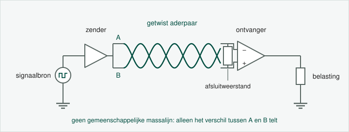
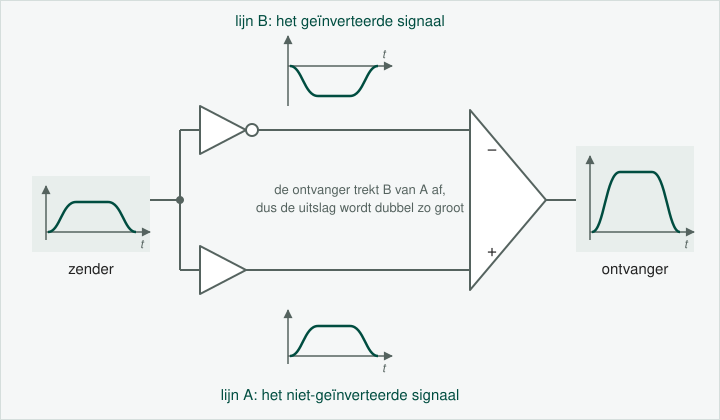

Het probleem bij single ended signaling is dat het enkel geschikt is voor korte afstanden en lage snelheden, door transmissieproblemen zoals ruis en attenuatie. In de theorie komt dat uitgebreid aan bod.
Om die transmissieproblemen tegen te gaan gebruiken we differential signaling.

In de praktijk sturen we over de ene geleider het geïnverteerde signaal door, en over de andere het niet-geïnverteerde signaal. Het spanningsverschil bij de ontvanger wordt daardoor dubbel zo groot.

De ontvanger meet het verschil tussen de twee signaaldraden, dus voor de signaaloverdracht zelf doet het spanningsniveau van de massa er niet meer toe. De massa zelf heb je nog altijd nodig: de busingangen van de ontvanger verdragen maar een beperkt verschil tegenover hun eigen massa. Voor de 75176 is dat -7 V tot +12 V, en dat vind je in de datasheet onder recommended operating conditions. Loopt het verder uiteen, dan leest de ontvanger de bus verkeerd en kan het IC kapot gaan.
Daarom loopt er bij RS-485 over grotere afstanden een derde geleider mee, de signal common, die de twee massa's aan elkaar knoopt. In het labo staan zender en ontvanger in hetzelfde lokaal en hangen ze aan hetzelfde stroomnet, dus liggen hun massa's daar vanzelf dicht bij elkaar. Tussen twee gebouwen op 1200 meter van elkaar is dat een ander verhaal.
In de eerste figuur heb je gezien dat we de geleiders twisten. Dat doen we om transmissieproblemen zoals EMI (elektromagnetische interferentie) en crosstalk tegen te gaan. Ook dat komt uitgebreider aan bod in de theorie. Maar het is niet omdat geleiders niet getwist zijn dat we daarom niet aan differential signaling doen. Het twisten is optioneel.